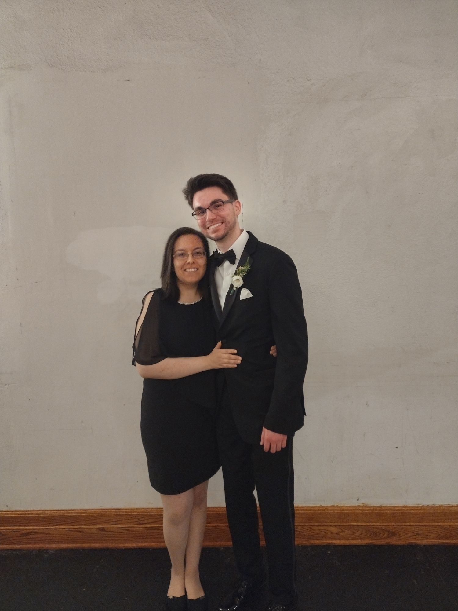

My name is Kelsey and this webpage is about three of my favorite things!
This webpage is meant to showcase the knowledge I've learned so far in CSIT121, by telling you about three of my favorite things.

This is my fiance, Zach, and I at a friend's wedding this year.
It was a very nice wedding in Detroit, Michigan in 2022. They used to professionally play competitive online eSports games together a few years ago on the same team!